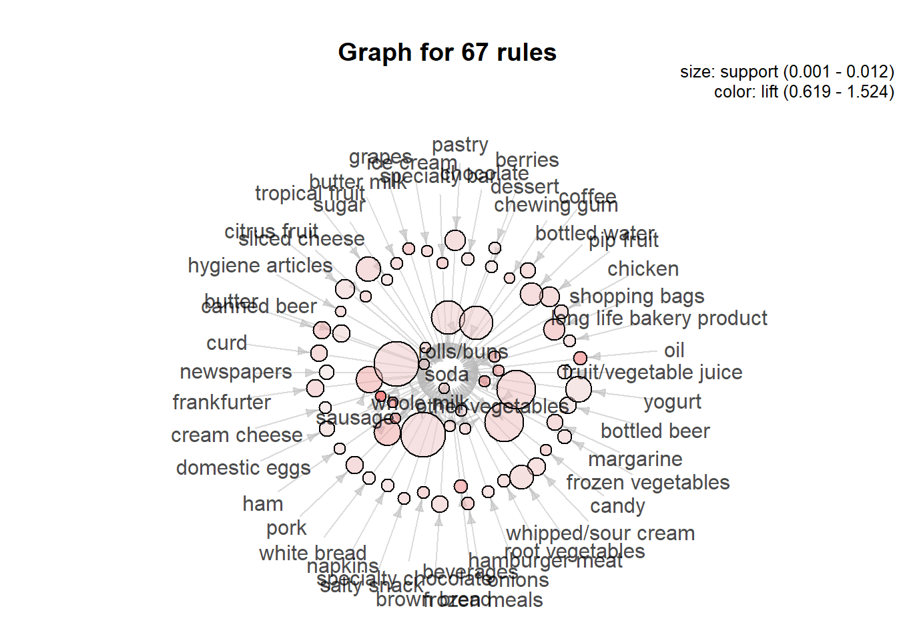
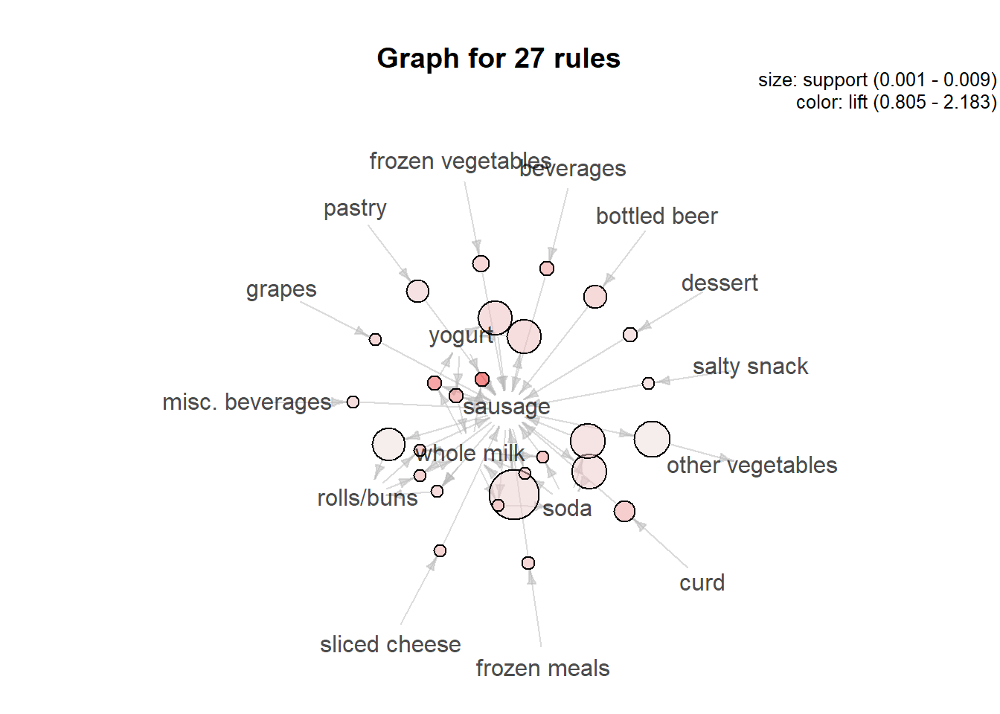

Groceries Data
Introduction
The data set has 3 columns and 38765 rows of purchase orders from grocery stores. I choose this data since Market Basket Analysis is one of the techniques to see associations between items by looking for combinations of items being purchased together frequently. In this project, I want to learn about Association Rules to analyze transaction data.
Association rules are statements that help to find relationships between data.
An association rule has two parts, an antecedent and a consequent. An antecedent is an item found in the data. A consequent is an item that is found in combination with the antecedent. Association rules are created by analyzing data for frequent relationships and using support and confidence to identify the most important relationships. Support is an indication of how frequently the items being purchased. Confidence states the number of times the antecedent/consequent statements found. More detail on arule.
Outcomes
- Identifying items which are purchased more frequently
- Identifying relationships between items purchased: support, lift, confidence
- Data visualizations
Loading Data
library("plyr")
library("Matrix")
library("arules", warn.conflicts = FALSE)
library("grid")
library("arulesViz")
library("colorspace")
groceries = read.csv("C:/Users/kanni/Downloads/Groceries_dataset.csv")
class(groceries)## [1] "data.frame"dim(groceries)## [1] 38765 3str(groceries)## 'data.frame': 38765 obs. of 3 variables:
## $ Member_number : int 1808 2552 2300 1187 3037 4941 4501 3803 2762 4119 ...
## $ Date : chr "21-07-2015" "05-01-2015" "19-09-2015" "12-12-2015" ...
## $ itemDescription: chr "tropical fruit" "whole milk" "pip fruit" "other vegetables" ...head(groceries)## Member_number Date itemDescription
## 1 1808 21-07-2015 tropical fruit
## 2 2552 05-01-2015 whole milk
## 3 2300 19-09-2015 pip fruit
## 4 1187 12-12-2015 other vegetables
## 5 3037 01-02-2015 whole milk
## 6 4941 14-02-2015 rolls/buns# check for NA
sum(is.na(groceries))## [1] 0# converting `Member_number`
sorting = groceries[order(groceries$Member_number),]
sorting$Member_number = as.numeric(sorting$Member_number)
str(sorting)## 'data.frame': 38765 obs. of 3 variables:
## $ Member_number : num 1000 1000 1000 1000 1000 1000 1000 1000 1000 1000 ...
## $ Date : chr "27-05-2015" "24-07-2015" "15-03-2015" "25-11-2015" ...
## $ itemDescription: chr "soda" "canned beer" "sausage" "sausage" ...# grouping same `Member_number` and `Date`
itemsList = ddply(sorting, c("Member_number", "Date"), function(df1) paste(df1$itemDescription, collapse = ","))
head(itemsList, 10)## Member_number Date V1
## 1 1000 15-03-2015 sausage,whole milk,semi-finished bread,yogurt
## 2 1000 24-06-2014 whole milk,pastry,salty snack
## 3 1000 24-07-2015 canned beer,misc. beverages
## 4 1000 25-11-2015 sausage,hygiene articles
## 5 1000 27-05-2015 soda,pickled vegetables
## 6 1001 02-05-2015 frankfurter,curd
## 7 1001 07-02-2014 sausage,whole milk,rolls/buns
## 8 1001 12-12-2014 whole milk,soda
## 9 1001 14-04-2015 beef,white bread
## 10 1001 20-01-2015 frankfurter,soda,whipped/sour cream# setting `Member_number` and `Date` to NULL
itemsList$Member_number <- NULL
itemsList$Date <- NULL
colnames(itemsList) <- c("itemsList")
# writing out itemsList
write.csv(itemsList,"ItemsList.csv", quote = FALSE, row.names = TRUE)
head(itemsList)## itemsList
## 1 sausage,whole milk,semi-finished bread,yogurt
## 2 whole milk,pastry,salty snack
## 3 canned beer,misc. beverages
## 4 sausage,hygiene articles
## 5 soda,pickled vegetables
## 6 frankfurter,curd# converting itemsList to basket type
basket = read.transactions(file="ItemsList.csv", rm.duplicates= TRUE, format="basket",sep=",",cols=1);## distribution of transactions with duplicates:
## items
## 1 2 3 4
## 662 39 5 1print(basket)## transactions in sparse format with
## 14964 transactions (rows) and
## 168 items (columns)# removing quotes
basket@itemInfo$labels = gsub("\"","",basket@itemInfo$labels)
# displaying frequent items purchased
itemFrequencyPlot(basket,topN=20,type="absolute",main="Item Frequency")
Rules
Support = Probability (A and B) Support = (# of transactions involving A and B) / (total # of transactions).
Confidence = Probability (A and B) = P(A) Confidence = (# of transactions involving A and B) / (total # of transactions that have A).
# using apriori algorithm to create rules
basketRules <- apriori(basket, parameter = list(minlen=2, sup = 0.001, conf = 0.06, target="rules"))## Apriori
##
## Parameter specification:
## confidence minval smax arem aval originalSupport maxtime support minlen
## 0.06 0.1 1 none FALSE TRUE 5 0.001 2
## maxlen target ext
## 10 rules TRUE
##
## Algorithmic control:
## filter tree heap memopt load sort verbose
## 0.1 TRUE TRUE FALSE TRUE 2 TRUE
##
## Absolute minimum support count: 14
##
## set item appearances ...[0 item(s)] done [0.00s].
## set transactions ...[168 item(s), 14964 transaction(s)] done [0.01s].
## sorting and recoding items ... [149 item(s)] done [0.00s].
## creating transaction tree ... done [0.01s].
## checking subsets of size 1 2 3 4 done [0.00s].
## writing ... [361 rule(s)] done [0.00s].
## creating S4 object ... done [0.00s].# print basketRules generated
print(length(basketRules))## [1] 361summary(basketRules)## set of 361 rules
##
## rule length distribution (lhs + rhs):sizes
## 2 3
## 334 27
##
## Min. 1st Qu. Median Mean 3rd Qu. Max.
## 2.000 2.000 2.000 2.075 2.000 3.000
##
## summary of quality measures:
## support confidence coverage lift
## Min. :0.001002 Min. :0.06014 Min. :0.005346 Min. :0.5195
## 1st Qu.:0.001337 1st Qu.:0.07473 1st Qu.:0.014836 1st Qu.:0.7575
## Median :0.001938 Median :0.08837 Median :0.021852 Median :0.8278
## Mean :0.002856 Mean :0.09562 Mean :0.031359 Mean :0.8883
## 3rd Qu.:0.003408 3rd Qu.:0.11392 3rd Qu.:0.037757 3rd Qu.:0.9547
## Max. :0.014836 Max. :0.25581 Max. :0.157912 Max. :2.1831
## count
## Min. : 15.00
## 1st Qu.: 20.00
## Median : 29.00
## Mean : 42.74
## 3rd Qu.: 51.00
## Max. :222.00
##
## mining info:
## data ntransactions support confidence
## basket 14964 0.001 0.06inspect(basketRules[1:15])## lhs rhs support confidence
## [1] {frozen fish} => {whole milk} 0.001069233 0.1568627
## [2] {seasonal products} => {rolls/buns} 0.001002406 0.1415094
## [3] {pot plants} => {other vegetables} 0.001002406 0.1282051
## [4] {pot plants} => {whole milk} 0.001002406 0.1282051
## [5] {pasta} => {whole milk} 0.001069233 0.1322314
## [6] {pickled vegetables} => {whole milk} 0.001002406 0.1119403
## [7] {packaged fruit/vegetables} => {rolls/buns} 0.001202887 0.1417323
## [8] {detergent} => {yogurt} 0.001069233 0.1240310
## [9] {detergent} => {rolls/buns} 0.001002406 0.1162791
## [10] {detergent} => {whole milk} 0.001403368 0.1627907
## [11] {semi-finished bread} => {other vegetables} 0.001002406 0.1056338
## [12] {semi-finished bread} => {whole milk} 0.001670676 0.1760563
## [13] {red/blush wine} => {rolls/buns} 0.001336541 0.1273885
## [14] {red/blush wine} => {other vegetables} 0.001136060 0.1082803
## [15] {flour} => {tropical fruit} 0.001069233 0.1095890
## coverage lift count
## [1] 0.006816359 0.9933534 16
## [2] 0.007083667 1.2864807 15
## [3] 0.007818765 1.0500611 15
## [4] 0.007818765 0.8118754 15
## [5] 0.008086073 0.8373723 16
## [6] 0.008954825 0.7088763 15
## [7] 0.008487036 1.2885066 18
## [8] 0.008620690 1.4443580 16
## [9] 0.008620690 1.0571081 15
## [10] 0.008620690 1.0308929 21
## [11] 0.009489441 0.8651911 15
## [12] 0.009489441 1.1148993 25
## [13] 0.010491847 1.1581057 20
## [14] 0.010491847 0.8868668 17
## [15] 0.009756750 1.6172489 16# Rules visualization
plot(basketRules, jitter = 0)
# plotting first 40 rules
plot(basketRules[1:40], method="graph")
summary(basketRules) shows there is total of 361 rules with mean support is equal to 0.28% and mean confidense is equal to 9.56% which states rule happens in 0.28% transactions and implication is 9.56%.
Correlation/ Lift
If lift = 1, then A and B are independent . If lift > 1, then A and B are positively correlated . If lift < 1, then A and B are negatively correlated.
Firstly let us try the eclat algorithm - to see most frequent itemsets. Below we will see the list of the most common items together with their individual support.
# use eclat to show most frequent items with support
frequentSets <- eclat(basket, parameter=list(supp=0.07, maxlen=10))## Eclat
##
## parameter specification:
## tidLists support minlen maxlen target ext
## FALSE 0.07 1 10 frequent itemsets TRUE
##
## algorithmic control:
## sparse sort verbose
## 7 -2 TRUE
##
## Absolute minimum support count: 1047
##
## create itemset ...
## set transactions ...[168 item(s), 14964 transaction(s)] done [0.01s].
## sorting and recoding items ... [5 item(s)] done [0.00s].
## creating sparse bit matrix ... [5 row(s), 14964 column(s)] done [0.00s].
## writing ... [5 set(s)] done [0.00s].
## Creating S4 object ... done [0.00s].inspect(frequentSets)## items support transIdenticalToItemsets count
## [1] {whole milk} 0.15791232 2363 2363
## [2] {other vegetables} 0.12209302 1827 1827
## [3] {rolls/buns} 0.10999733 1646 1646
## [4] {soda} 0.09709971 1453 1453
## [5] {yogurt} 0.08587276 1285 1285sodaRules = subset(basketRules, items %in% "soda")
inspect(head(sodaRules))## lhs rhs support confidence coverage lift
## [1] {chewing gum} => {soda} 0.001002406 0.08333333 0.01202887 0.8582244
## [2] {specialty bar} => {soda} 0.001269714 0.09090909 0.01396685 0.9362448
## [3] {hygiene articles} => {soda} 0.001069233 0.07804878 0.01369955 0.8038004
## [4] {candy} => {soda} 0.001269714 0.08837209 0.01436782 0.9101170
## [5] {sliced cheese} => {soda} 0.001136060 0.08095238 0.01403368 0.8337037
## [6] {ice cream} => {soda} 0.001202887 0.07929515 0.01516974 0.8166364
## count
## [1] 15
## [2] 19
## [3] 16
## [4] 19
## [5] 17
## [6] 18plot(sodaRules,method="graph",interactive=FALSE,shading="lift")## Warning in plot.rules(sodaRules, method = "graph", interactive = FALSE, : The
## parameter interactive is deprecated. Use engine='interactive' instead.
sausageRules = subset(basketRules, items %in% "sausage")
inspect(head(sort(sausageRules, by ="lift")))## lhs rhs support confidence coverage
## [1] {whole milk,yogurt} => {sausage} 0.001470195 0.13173653 0.011160118
## [2] {sausage,whole milk} => {yogurt} 0.001470195 0.16417910 0.008954825
## [3] {sausage,yogurt} => {whole milk} 0.001470195 0.25581395 0.005747126
## [4] {beverages} => {sausage} 0.001537022 0.09274194 0.016573109
## [5] {soda,whole milk} => {sausage} 0.001069233 0.09195402 0.011627907
## [6] {curd} => {sausage} 0.002940390 0.08730159 0.033680834
## lift count
## [1] 2.183062 22
## [2] 1.911888 22
## [3] 1.619975 22
## [4] 1.536866 23
## [5] 1.523810 16
## [6] 1.446712 44plot(sausageRules,method="graph",interactive=FALSE,shading="lift")## Warning in plot.rules(sausageRules, method = "graph", interactive = FALSE, : The
## parameter interactive is deprecated. Use engine='interactive' instead.
sausageRules can be interpreted as such:
- customers who buys whole milk and yogurt are more than two times, more likely to buy sausage than other customers.
- customers who buys beverages are more than once, more likely to buy sausage than other customers.
More Visualizations
Each of the matrix cells can have different red shade depending on the lift value. Numbers on the axes are corresponding to the items listed before the matrix. For instance, the most red cell corresponds to the rule {whole milk,yogurt} => {sausage}, so sausage is most likely to be bought with whole milk and yogurt.
plot(sausageRules, method="matrix", measure=c("support","confidence"))## Itemsets in Antecedent (LHS)
## [1] "{whole milk,yogurt}" "{sausage,yogurt}"
## [3] "{beverages}" "{soda,whole milk}"
## [5] "{curd}" "{sausage,whole milk}"
## [7] "{rolls/buns,whole milk}" "{rolls/buns,sausage}"
## [9] "{sliced cheese}" "{frozen meals}"
## [11] "{grapes}" "{frozen vegetables}"
## [13] "{bottled beer}" "{sausage,soda}"
## [15] "{misc. beverages}" "{yogurt}"
## [17] "{dessert}" "{pastry}"
## [19] "{soda}" "{salty snack}"
## [21] "{sausage}"
## Itemsets in Consequent (RHS)
## [1] "{other vegetables}" "{rolls/buns}" "{soda}"
## [4] "{whole milk}" "{sausage}" "{yogurt}"
plot(sausageRules, method="grouped", measure="support", control=list(col=sequential_hcl(100)))
Grouped matrix plot has the same data on the axes. Yet, the size reflects the support of the rule and the color reflects the lift of the rule.
inspect(head(sort(basketRules, by = "lift")))## lhs rhs support confidence
## [1] {whole milk,yogurt} => {sausage} 0.001470195 0.13173653
## [2] {sausage,whole milk} => {yogurt} 0.001470195 0.16417910
## [3] {specialty chocolate} => {citrus fruit} 0.001403368 0.08786611
## [4] {sausage,yogurt} => {whole milk} 0.001470195 0.25581395
## [5] {flour} => {tropical fruit} 0.001069233 0.10958904
## [6] {beverages} => {sausage} 0.001537022 0.09274194
## coverage lift count
## [1] 0.011160118 2.183062 22
## [2] 0.008954825 1.911888 22
## [3] 0.015971665 1.653872 21
## [4] 0.005747126 1.619975 22
## [5] 0.009756750 1.617249 16
## [6] 0.016573109 1.536866 23inspect(tail(sort(basketRules, by = "lift")))## lhs rhs support confidence
## [1] {butter milk} => {other vegetables} 0.001269714 0.07224335
## [2] {sugar} => {other vegetables} 0.001269714 0.07169811
## [3] {pastry} => {other vegetables} 0.003675488 0.07105943
## [4] {misc. beverages} => {whole milk} 0.001403368 0.08898305
## [5] {specialty chocolate} => {whole milk} 0.001336541 0.08368201
## [6] {long life bakery product} => {other vegetables} 0.001136060 0.06343284
## coverage lift count
## [1] 0.01757551 0.5917074 19
## [2] 0.01770917 0.5872417 19
## [3] 0.05172414 0.5820106 55
## [4] 0.01577118 0.5634966 21
## [5] 0.01597167 0.5299270 20
## [6] 0.01790965 0.5195451 17According to this basketRule, the highest lift value is 2.18 which means that customers are most likely to buy sausage than any other product, while already having whole milk and yogurt in basket. The lowest lift value is 0.519 which means that customers are least likely to buy other vegetables than any other product, while already having long life bakery product in basket.